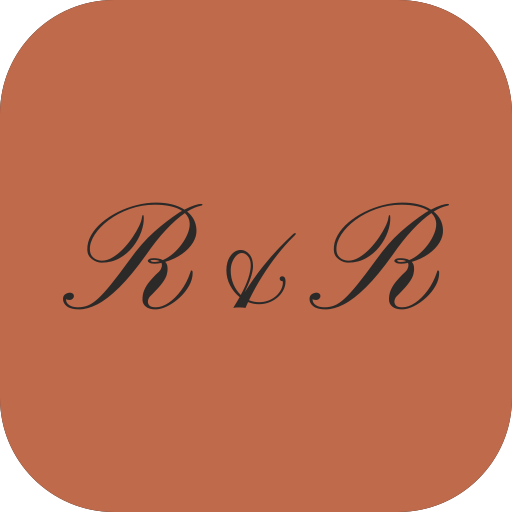
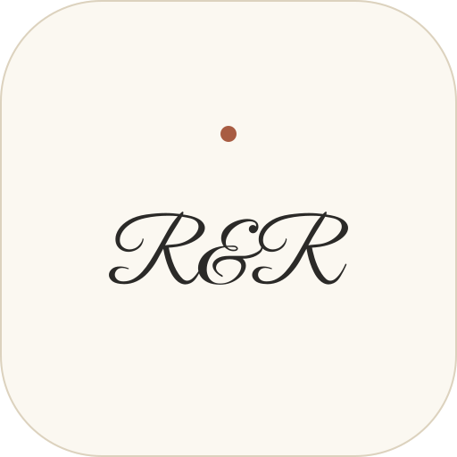
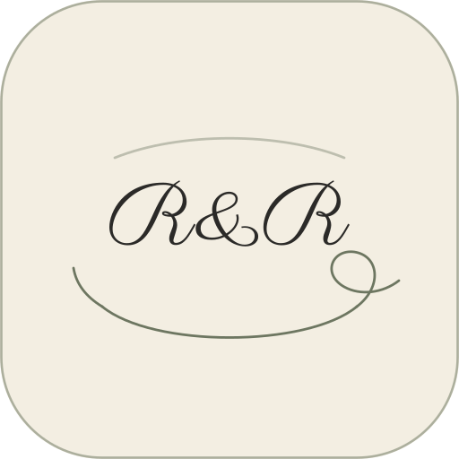

Brand assets
Four logo directions, each supplied as a wordmark, an app icon, a monogram and a horizontal lockup. All lettering is converted to vector outlines, so nothing here depends on a webfont loading.
512 × 512 SVG, with PNG exports at 1024, 512 and 180.

Negative space
Minimalist
Line artThe same icon at four sizes. A home-screen icon renders around 60 px, and a favicon at 32 px — script lettering is fragile at both.
Minimalist and negative space survive small sizes. The geometric tick marks and the line-art flourish turn to mush below roughly 64 px. If you pick either of those, they need a simplified small-size variant with the fine detail stripped out — standard practice for an icon set.
Transparent, painted with currentColor, so colour comes from CSS rather than being baked into the file.
Because the wordmark uses currentColor, the same file works on either ground.
An <img> tag can't inherit currentColor — the browser renders the SVG in an isolated document. To recolour a wordmark, inline the SVG markup or use a CSS mask. Both snippets are below.
<!-- 1. Inline the SVG so currentColor works --> <span class="rr-wordmark rr-wordmark--clay"> <svg viewBox="0 0 ..."><path fill="currentColor" d="..."/></svg> </span> <!-- 2. Or mask it, which keeps the file external --> <style> .wordmark-masked { width: 240px; height: 42px; background: var(--rr-clay); mask: url(wordmark/wordmark-minimal.svg) center / contain no-repeat; -webkit-mask: url(wordmark/wordmark-minimal.svg) center / contain no-repeat; } </style> <!-- 3. Favicon and home-screen icon --> <link rel="icon" href="icon/icon-minimal.svg"> <link rel="apple-touch-icon" href="png/icon-minimal-180.png">
| Path | What it is |
|---|---|
wordmark/ | Full name, transparent, currentColor |
icon/ | 512 × 512 app icons with their grounds |
monogram/ | R&R letters alone — for badges, avatars, stamps |
lockup/ | Icon beside the name, for headers and footers |
png/ | Raster icons at 1024, 512 and 180 |
logo.css | Palette tokens and sizing helpers |